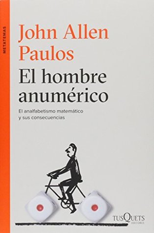

El hombre anumérico
Reseña por Jorge I. Zuluaga

Ver detalles · Ver reseña en GoodReads (necesita cuenta)
Sin embargo, poco se habla de aquellos textos que deberían ser de obligatoria lectura para todos, sin distinción de carrera o nivel. Que aportan mucho a cualquiera que quiera convertirse en un buen profesional, por no decir tan solo en un buen ciudadano del mundo. No me cabe la menor duda de que este librito de John Allen Paulos es uno de ellos.
No es un libro para leer en las noches como reemplazo de algún somnífero. Tampoco es uno para leer con descuido en un metro o en los ratos libres en una cafetería. La importancia del tema, así como la profundidad de algunas de las cosas que discute, merecen una buena dosis de atención.
No se trata tampoco de un libro aburrido o de interés solo académico. El librito tiene una prosa fluida, está lleno de anécdotas y acotaciones chistosas. Sin embargo, a pesar de la increíble capacidad de su autor, el matemático John Allen Paulos, para divulgar las matemáticas, hay apartes que hay que leer con cuidado e incluso con un papel en la mano. Pero, como dice el autor, a diferencia de los textos académicos, el que se sienta agobiado con un ejemplo o una explicación que supera la capacidad de concentración del lector promedio puede “saltarse” el respectivo aparte. No hay examen al final del libro, pero yo les recomiendo leerlo como si lo hubiera.
Sobre el contenido solo quiero mencionar una situación que ilustra bastante bien algunas de las cosas increíbles que enseña el libro.
Está usted reunido con un grupo de 30 personas y les dice: “Entre ustedes estoy casi completamente seguro de que hay al menos dos que cumplen años exactamente el mismo día”. Este es un ejemplo del tipo de afirmaciones genéricas que hacen los astrólogos y los pseudocientíficos (sabiendo o no sabiendo lo que hacen). Tal como lo demuestra el libro, hay una probabilidad del 50% de que en un grupo de 23 personas haya dos con el mismo día de cumpleaños. Así que afirmar, entre 30, que existe esa coincidencia no tiene gracia.
Lo que esperaríamos todos los escépticos es que esos “profetas” modernos, en lugar de decir algo tan vago como “hay al menos dos con la misma fecha”, dijeran que están seguros de que en el grupo dos personas cumplen años el 4 de julio. La probabilidad de acertar en ese caso es muy baja y, en caso de que lo hicieran sistemáticamente, demostrarían realmente lo que quieren probar.
¿Qué le falta al libro? Me hubiera encantado que discutiera más a fondo el hecho de que los humanos no somos “naturalmente numéricos”. Se adivina en las reflexiones del autor el supuesto de que el “numerismo” se puede conseguir con educación u otras influencias sociales.